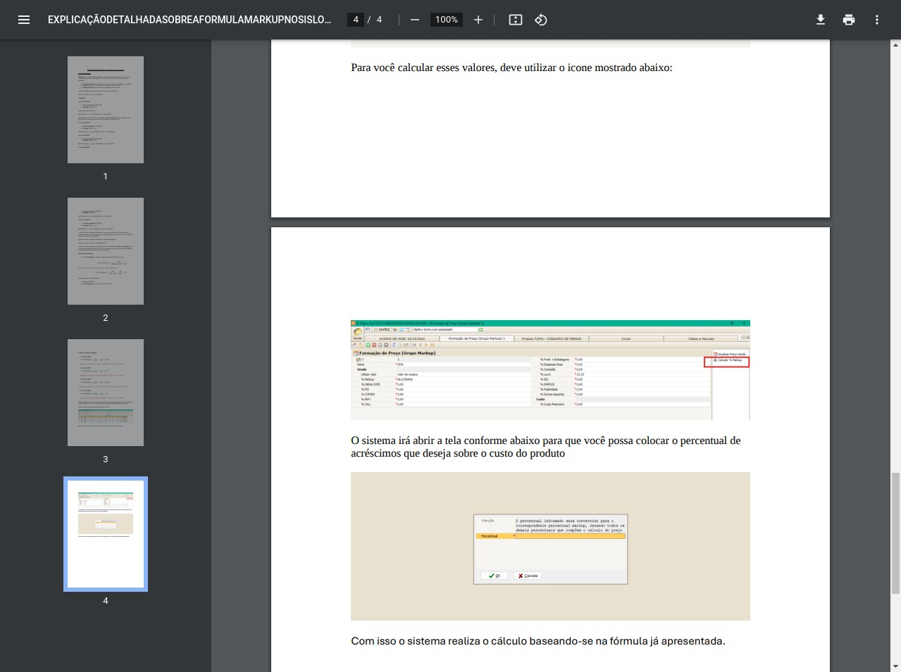

Explicação Detalhada sobre a Fórmula Markup no SISLOC
O que é o Markup
O Markup é um conceito fundamental na precificação de produtos e serviços, funcionando como um índice estratégico que permite às empresas definirem seus preços de venda de maneira estruturada e lucrativa. Este método considera não apenas o custo direto do produto ou serviço, mas incorpora também as despesas operacionais e a margem de lucro desejada pela empresa, criando assim uma abordagem completa para a formação de preços.
Na sua essência, o Markup é composto por três componentes principais que, quando combinados adequadamente, garantem que o preço final seja suficiente para cobrir todos os custos e ainda gerar o retorno financeiro esperado:
Componentes do Markup:
- Custo do produto ou serviço: Engloba todos os gastos diretos necessários para adquirir ou produzir o item, incluindo matéria-prima, mão de obra direta e outros custos diretamente atribuíveis.
- Despesas: Abrange todos os custos indiretos que a empresa precisa cobrir, como aluguel de instalações, salários administrativos, contas de utilidades (água, luz, internet) e outros gastos operacionais que não estão diretamente ligados ao produto, mas são essenciais para o funcionamento do negócio.
- Margem de lucro: Representa o ganho financeiro que a empresa deseja obter com a venda, sendo um percentual definido estrategicamente conforme os objetivos financeiros e posicionamento de mercado da organização.
A compreensão adequada destes componentes é essencial para implementar o Markup de forma eficaz, garantindo que os preços estabelecidos sejam competitivos no mercado e, ao mesmo tempo, suficientes para manter a saúde financeira da empresa a longo prazo.
A Fórmula Tradicional do Markup
Na abordagem tradicional, o cálculo do preço de venda utilizando o Markup segue uma lógica direta e intuitiva. A fórmula básica consiste em multiplicar o custo do produto por um fator que incorpora o Markup desejado:
Nesta fórmula, o Markup é expresso como um valor decimal que representa a porcentagem de acréscimo sobre o custo. Por exemplo, um Markup de 150% seria representado como 1,5 na fórmula. Esta abordagem permite que o preço final cubra o custo do produto e ainda adicione o percentual desejado para cobrir despesas e gerar lucro.
Para ilustrar como esta fórmula funciona na prática, vamos analisar alguns exemplos com diferentes percentuais de Markup, todos partindo de um custo base de R$ 100,00:
Exemplo 1: Lucro de 150%
- Custo do produto: R$ 100,00
- Markup: 150% = 1,5
Com um Markup de 150%, o preço de venda será R$ 250,00, o que significa que o preço cobre o custo original e gera um lucro equivalente a 150% deste custo.
Exemplo 2: Lucro de 180%
- Custo do produto: R$ 100,00
- Markup: 180% = 1,8
Neste caso, o preço de venda de R$ 280,00 cobre o custo e proporciona um lucro de 180% sobre o valor investido inicialmente.
Exemplo 3: Lucro de 300%
- Custo do produto: R$ 100,00
- Markup: 300% = 3,0
Com um Markup mais elevado de 300%, o preço de venda atinge R$ 400,00, gerando um retorno significativamente maior sobre o investimento inicial.
Exemplo 4: Lucro de 500%
- Custo do produto: R$ 100,00
- Markup: 500% = 5,0
Com 500% de Markup, o preço de venda chega a R$ 600,00, demonstrando como percentuais mais altos impactam diretamente o valor final do produto.
Exemplo 5: Lucro de 900%
- Custo do produto: R$ 100,00
- Markup: 900% = 9,0
No cenário mais extremo apresentado, com 900% de Markup, o preço de venda atinge R$ 1.000,00, demonstrando como este método pode ser escalado para diferentes estratégias de precificação.
Estes exemplos ilustram claramente como o preço de venda aumenta proporcionalmente ao percentual de Markup aplicado. A abordagem tradicional é direta e intuitiva, facilitando o entendimento da relação entre custo, margem desejada e preço final.
A Fórmula Markup no SISLOC
O sistema SISLOC utiliza uma abordagem diferenciada para o cálculo do Markup, que inverte a lógica tradicional mas chega aos mesmos resultados finais. Esta metodologia alternativa pode parecer inicialmente mais complexa, mas oferece vantagens específicas para o contexto operacional do sistema.
Nesta fórmula, o conceito fundamental muda, pois agora utilizamos um fator de markup, que representa o inverso do markup tradicional. Em vez de somar o lucro ao custo, dividimos o custo pelo fator para encontrar o preço de venda, multiplicando o resultado por 100 para obter o valor final.
Entendendo o Fator Markup:
O fator markup é calculado a partir do markup tradicional através da seguinte fórmula:
Esta transformação matemática permite que o sistema mantenha a mesma lógica de precificação, apenas adaptando a forma de cálculo para melhor integração com os processos internos do SISLOC.
Forma Padrão de Calcular o Markup
Para facilitar a compreensão e aplicação prática do conceito de Markup no SISLOC, apresentamos abaixo um guia detalhado com a forma padrão de realizar este cálculo. Este método estruturado permite que qualquer usuário, independentemente de sua familiaridade com conceitos financeiros, possa determinar com precisão o fator de markup e o preço de venda correspondente.
Somar o percentual de lucro desejado com 100
O primeiro passo consiste em adicionar 100 ao percentual de lucro que você deseja obter. Esta soma representa o total percentual que o preço de venda deve cobrir (100% do custo + o percentual de lucro desejado).
Dividir 100 pelo resultado anterior
Em seguida, divide-se 100 pelo valor obtido no passo anterior. Este cálculo determina o fator de markup, que representa a proporção do custo em relação ao preço de venda final.
Segundo Passo: Aplicação do Fator Markup
Dividir o preço de custo pelo fator markup
Uma vez calculado o fator markup, basta dividir o custo do produto por este fator para obter o preço de venda que incorpora a margem de lucro desejada.
Exemplo Prático: Lucro de 200%
Vamos aplicar o método passo a passo para calcular o preço de venda de um produto com custo de R$ 100,00, desejando uma margem de lucro de 200%:
O preço de venda de R$ 300,30 incorpora o custo do produto e a margem de lucro desejada de 200%.
Cálculo Manual do Lucro
Além do método para calcular o preço de venda a partir da margem de lucro desejada, é igualmente importante compreender como realizar o processo inverso: determinar o percentual de lucro a partir do fator markup. Este conhecimento permite uma análise completa e flexível das estratégias de precificação.
Somar o percentual de lucro desejado com 100
Inicie somando o percentual de lucro que você deseja obter com 100, representando o total percentual que o preço deve cobrir.
Dividir 100 pelo resultado
Divida 100 pelo valor obtido no passo anterior para encontrar o fator markup básico.
Multiplicar o fator por 100
Multiplique o fator obtido por 100 para convertê-lo em percentual, obtendo assim o fator markup expresso em porcentagem.
Subtrair 100 do fator markup
Por fim, subtraia 100 do fator markup percentual para determinar o percentual de lucro efetivo.
Exemplo Prático: Fator Markup de 0,25
Vamos determinar o percentual de lucro correspondente a um fator markup de 0,25:
Como o resultado é negativo, isso indica que o fator markup de 0,25 corresponde a um lucro de 300% (pois 100 ÷ 0,25 = 400, e 400 - 100 = 300%).
Observação importante: Na prática, o cálculo do lucro a partir do fator markup pode ser simplificado utilizando a fórmula direta:
Esta fórmula combina os passos 3 e 4 do método detalhado acima, proporcionando o mesmo resultado de forma mais direta.
Para demonstrar como esta abordagem funciona na prática e confirmar que ela produz os mesmos resultados que o método tradicional, vamos revisitar os exemplos anteriores utilizando a fórmula do SISLOC:
Exemplo 1: Lucro de 100%
Primeiro, calculamos o fator markup:
Agora, aplicamos na fórmula do SISLOC:
O resultado de R$ 200,00 corresponde exatamente ao que obteríamos com a fórmula tradicional para um markup de 100%.
Exemplo 2: Lucro de 180%
Calculando o fator markup:
Aplicando na fórmula:
O resultado é praticamente idêntico ao obtido pelo método tradicional (R$ 280,00), com uma pequena diferença devido ao arredondamento do fator.
Exemplo 3: Lucro de 300%
Calculando o fator markup:
Aplicando na fórmula:
O resultado de R$ 400,00 é exatamente igual ao obtido pelo método tradicional.
Exemplo 4: Lucro de 500%
Calculando o fator markup:
Aplicando na fórmula:
Novamente, o resultado é consistente com o método tradicional.
Exemplo 5: Lucro de 900%
Calculando o fator markup:
Aplicando na fórmula:
O resultado final de R$ 1.000,00 confirma a equivalência entre os dois métodos de cálculo.
Esta abordagem alternativa utilizada pelo SISLOC, embora possa parecer mais complexa à primeira vista, mantém a mesma lógica matemática e produz resultados idênticos aos da fórmula tradicional. A principal diferença está na forma como o sistema processa internamente os cálculos, adaptando-os à sua arquitetura e fluxos de trabalho específicos.
Visualização no Sistema SISLOC
O SISLOC implementa a fórmula de Markup de maneira intuitiva através de sua interface gráfica, permitindo que os usuários apliquem os conceitos teóricos de forma prática e eficiente. O sistema oferece ferramentas específicas para calcular e visualizar os resultados da aplicação do Markup nos preços dos produtos e serviços.

Figura 1: Tabela do SISLOC demonstrando os diferentes percentuais de Markup e seus resultados.
Na imagem acima, podemos observar como o sistema apresenta os diferentes percentuais de Markup e seus respectivos resultados em uma tabela organizada. Esta visualização facilita a compreensão da relação entre o percentual de lucro desejado e o preço final calculado pelo sistema.
Para realizar o cálculo do Markup no SISLOC, o usuário deve acessar a funcionalidade específica através do ícone destacado na interface. Ao clicar neste ícone, o sistema abre uma tela dedicada onde é possível inserir o percentual de acréscimo desejado sobre o custo do produto.

Figura 2: Interface para configuração do percentual de Markup no sistema.
Após acessar esta tela, o sistema apresenta um campo específico onde o usuário pode inserir o percentual de acréscimos que deseja aplicar sobre o custo do produto. Esta interface intuitiva simplifica o processo de definição do Markup, tornando-o acessível mesmo para usuários sem conhecimento aprofundado em cálculos financeiros.

Figura 3: Janela de confirmação para aplicação do percentual de Markup.
Uma vez que o percentual é inserido, o sistema realiza automaticamente o cálculo baseando-se na fórmula apresentada anteriormente (Preço de Venda = Custo / Fator Markup × 100). O resultado é então aplicado aos produtos selecionados, atualizando seus preços de venda de acordo com o Markup definido.
Nota importante: O sistema SISLOC utiliza o conceito de fator de markup, que é o inverso do markup tradicional. Esta abordagem permite maior flexibilidade e precisão nos cálculos, especialmente quando se trabalha com diferentes categorias de produtos e serviços que podem requerer estratégias de precificação distintas.
Conclusão
A fórmula de Markup implementada no SISLOC representa uma abordagem matemática alternativa, mas equivalente, ao método tradicional de cálculo de preços. Embora utilize o conceito de fator de markup (o inverso do markup tradicional), os resultados finais são idênticos, garantindo a precisão na definição dos preços de venda.
Esta metodologia oferece vantagens significativas no contexto do sistema SISLOC, permitindo:
- Maior integração com os demais módulos e funcionalidades do sistema
- Flexibilidade para trabalhar com diferentes estratégias de precificação
- Interface intuitiva que simplifica o processo de definição de preços
- Consistência nos resultados, independentemente do percentual de lucro desejado
Compreender a lógica por trás desta fórmula é essencial para utilizar o sistema de forma eficiente e estratégica, garantindo que os preços definidos sejam adequados para cobrir custos, despesas operacionais e ainda gerar a margem de lucro desejada pela empresa.
A visualização clara dos resultados através das tabelas e interfaces do sistema facilita a tomada de decisões relacionadas à precificação, permitindo ajustes rápidos e precisos conforme as necessidades do negócio e as condições do mercado.
Os métodos detalhados para cálculo padrão e manual do markup apresentados neste documento fornecem ferramentas práticas para que qualquer usuário possa aplicar estes conceitos em seu dia a dia, independentemente de sua familiaridade prévia com cálculos financeiros ou com o sistema SISLOC.